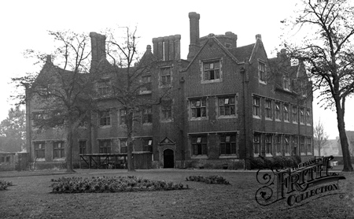

Friday, January the 29th, 2010
back to: title, date or indexes
Well, stap my chives, what a day! Those of you who have studied the comments posted under the Book O’ Days postage will know that today is both Potato Day and Grunting Day. That being so, I set my alarm and was up and about before dawn to ensure I was in time to follow the annual parade from Pang Hill Orphanage. There they all were, the tinies, still half-asleep, each clutching a potato in their freezing little hands. Many of the potatoes were severely blighted with the spraingue, but that is only to be expected. Grimes, the Pang Hill allotment-keeper, has not really been doing his job properly since he was struck by lightning in that terrible storm on Saint Bibblybibdib's Day two years ago, but whenever it is suggested that he retire and give up his post to a more sprightly replacement he casts eerie spells. Birds fall from the sky, hollyhocks shrivel and die, and Pang Hill is overrun with rabid squirrels. It really is best just to leave Grimes be.
Spraingue blight or no, the orphans were all present and correct huddling in the porch of the orphanage at the crack of dawn, ready for the parade. As the first rays of that mighty orb, the sun, appeared on the horizon, the Pang Hill Orphanage Choir Conductor bashed his stick on the metal plate wedged in Grimes' cranium, and the tinies, all forty of them, struck up their superb rendition of Spem in alium by Thomas Tallis, arranged for high-pitched infant grunting. And as they grunted, they began to march, through sludge and puddles, from the grim orphanage, across withered lawns, all the way up into the hills, where they placed their potatoes in a pile outside the lair of the Grunty Man. Then they marched empty-handed all the way back to their base and brickish home, grunting Muila ni meps, the Choir Conductor's own composition for groans and grunting, which is basically just Spem in alium sung, or rather grunted, backwards, the sort of thing Brian “One Brain” Eno might record, and probably has done. Once safe back inside the orphanage, all the tinies were given a radish and some goaty fluid for breakfast.
I stayed up in the hills, though, hoping to spot the Grunty Man creep out of his lair and gather up the forty potatoes left to him as an offering. It is thought that such a gift will assuage his grunty wrath for the year ahead, or at least until next week. But of course there was no sign of him, because he stayed inside his foul and stinking den, glued to his laptop, watching Tony Blair give evidence to the Chilcott Inquiry, and grunting throughout. But were they grunts of approbation or disdain? Only the Grunty Man knows, and it would be a brave and foolhardy person who attempted a mind-meld with that extraordinary, and extraordinarily pea-sized, grunty brain.

Pang Hill Orphanage, before its becrumblement
Hooting Yard on the Air, June the 10th, 2010 : “The Abominable Example Of Little Beggar Boys” (starts around 11:04)